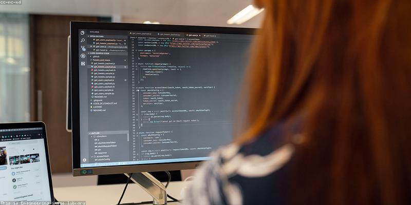

I built this website using html and css for a simple design. I used nav for the navigation and inline-border to make it horizontal, I also used sticky, top:0 and width: 100% to keep the navigation bar at the top when scrolling through the pages. For simple formatting (AC 1.2), I used bold tags to highlight certain parts. I made a table in the solutions page to list inofrmation about renewable energy and fossil fuels. I used margin and padding to keep elements fairly spaced apart, which made the website look cleaner. I used ordered and unordered lists throughout the website for scientific facts and for the navigation bar (AC 1.3). By using a style.css file (AC 1.4), every page had the same layout.
The websites main goal was to provide clear information to people about the climate crisis (AC 2.1). I chose a navigation bar over a frame structure as it looked more realistic and professional, this also made all pages accessible from the top.
To make the site interactive (AC 3.1), I used a Climate Action Survey using FormSubmit. I didn't want to make my own database as that's time consuming and complicated so I used a third party. I tested the form (AC 3.2) to ensure that the submissions went through without any problems.
I wrote all the code using Vim on my terminal for fast and easy access, I then made a repository on Github and pushed these changes there using Git. This allowed me to experiment with alternative designs and go back to a previous commit whenever I ran into a bug. For technical standards (AC 4.1), I kept the site lightweight by keeping style.css simple and efficient for Level 3 standards. Legally (AC 4.2), I citied my sources in task 2 to respect copyright laws.
While testing the site, I noticed the Climate Action Survey wasn't working because FormSubmit needs a live website to recieve information. To fix this, I deployed my website to Github Pages so it would have a public domain. This solved the issue and allowed the form to send responses properly. During my testing (A.C. 3.2), there was a default captcha check.
This was inconvenient for whenever a user submitted a response, so I added a line to my take_action page to remove this. This made the submission feel faster, making the website fit the simple and clean design I was aiming for. Moving the site from my local folder to Github confirmed all the interactive features were working properly for anyone browsing through the site.